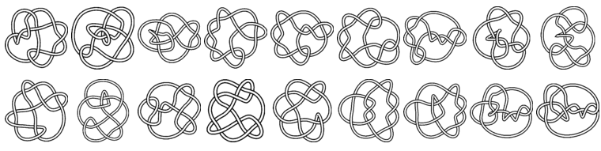
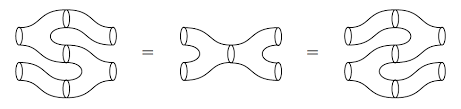

TQFT | Topological order | Topological quantum computation
This page serves as a reference hub for Topological Quantum Field Theories (TQFTs) and Topological Order. To facilitate up-to-date research, I've introduced the "TQFT Arxiv Daily"—an automated system that collates recent papers from Arxiv on TQFT, Topological Order, and associated topics: 
A similar tool worth noting is the " TQFT arxiv digest " curated by Clement Delcamp.

Topological Quantum Field Theory (TQFT) is a rich subject that bridges the worlds of mathematics and physics, and it's a central topic in mathematical physics.
From the Mathematical Perspective:
TQFT arose from the interplay between the fields of quantum field theory and low-dimensional topology. A central idea is that of a "topological invariant," which is a quantity that remains unchanged under continuous deformations of a space. In the context of TQFT, these invariants are associated with certain manifolds, and the theory gives a systematic way to compute them.
One of the most celebrated outcomes of TQFT in mathematics is the discovery of new invariants for 3-manifolds and knots, such as the Jones polynomial for knots and the Witten-Reshetikhin-Turaev invariants for 3-manifolds. These invariants have profound implications for the classification of knots and the study of 3-dimensional spaces.
From the Physical Perspective:
In physics, particularly in the study of quantum systems, the behavior of a system is often described using a quantum field theory (QFT). Traditional QFTs are highly sensitive to the detailed geometry of the space they're defined on. However, in a TQFT, as the name suggests, only the topology (the broad, qualitative features) of the space matters. This means that physical quantities in a TQFT don't change under smooth deformations of the underlying space.
This "topological" property has intriguing implications. For one, it means that TQFTs inherently resist the effects of local perturbations, a feature that's attractive in the study of quantum computation. This has led to interest in using TQFT as a basis for understanding and designing "topological quantum computers," which might have inherent resistance to certain types of errors that plague other quantum computing designs.
Moreover, TQFTs arise naturally in the study of certain condensed matter systems, like the fractional quantum Hall effect, where the emergent excitations can be described by topological properties.
Topological Quantum Field Theory is a beautiful blend of abstract mathematics and deep physical principles. On one hand, it offers powerful mathematical tools to classify and understand complex geometric structures. On the other, it provides a framework to understand certain quantum systems where the fine details are washed away, leaving only the broad topological features to dictate the physics.

(I) TQFT General reference
There are numerous valuable resources for understanding TQFT. Below, I've highlighted just a few of them:- Kevin Walker's note: TQFT 2006
- Kevin Walker's note: On Witten's 3-manifold Invariants.
- Vladimir Turaev and Alexis Virelizier: Monoidal Categories and Topological Field Theory.
- Gregory W. Moore's note: A Few Remarks On Topological Field Theory
- Joachim Kock: Frobenius algebras and 2D topological quantum field theories
- Bojko Bakalov and Alexander Kirillov, Jr.: Lectures on tensor categories and modular functor.
- Vladimir Turaev: Quantum Invariants of Knots and 3-Manifolds.
- Enore Guadagnini: The link invariants of the Chern-Simons field theory.
I also recommend the Reading list in topological QFT on physics.stackexchange.
For (1+1)D TQFT, see the article: (1+1)D TQFT.
(II) Topological phases of matter
Some lecture notes, books and reviews- Edward Witten, Three Lectures On Topological Phases Of Matter.
- David Tong, Lectures on the Quantum Hall Effect.
- Xiao-Gang Wen, Quantum Field Theory of Many-Body Systems: From the Origin of Sound to an Origin of Light and Electrons
- Subir Sachdev, Quantum Phase Transitions.
- Bei Zeng, Xie Chen, Duan-Lu Zhou, Xiao-Gang Wen, Quantum Information Meets Quantum Matter -- From Quantum Entanglement to Topological Phase in Many-Body Systems.
- Steve Simon, Topological Quantum: Lecture Notes.
Kitaev quantum double model
The Hopf algebra quantum double model- Oliver Buerschaper, Juan Martín Mombelli, Matthias Christandl, Miguel Aguado, A hierarchy of topological tensor network states.
- Benjamin Balsam, Alexander Kirillov, Kitaev's Lattice Model and Turaev-Viro TQFTs.
- Florian Girelli, Prince K. Osei, Abdulmajid Osumanu, Semidual Kitaev lattice model and tensor network representation.
- Catherine Meusburger, Kitaev lattice models as a Hopf algebra gauge theory.
- Catherine Meusburger, Derek K. Wise, Hopf algebra gauge theory on a ribbon graph.
Algebraic topology
For general topology, the following material are good to read- James Munkres, Topology (2nd Edition).
- James Dugundji, Topology.
- M. A. Armstrong, Basic topology.
- I.M. Singer, J.A. Thorpe, Lecture Notes on Elementary Topology and Geometry.
- James Munkres, Elements of Algebraic Topology.
- A Hatcher, Algebraic Topology.
- J. Peter May, A Concise Course in Algebraic Topology.
Some useful links
Here are some useful links for TQFT, which contain lecture notes and expository articles of TQFT.- The n-Category Cafe: link
- AnyonWiki
- Xiao-Gang Wen's blog: link
- Kevin Walker's homepage: link
- Zhenghan Wang's homepage: link
- Alexander Kirillov's homepage: link
- Albert Georg Passegger's homepage: link
- Pavel Etingof's homepage: link
- Gregory W. Moore's homepage: link
- Nicolai Reshetikhin's homepagelink